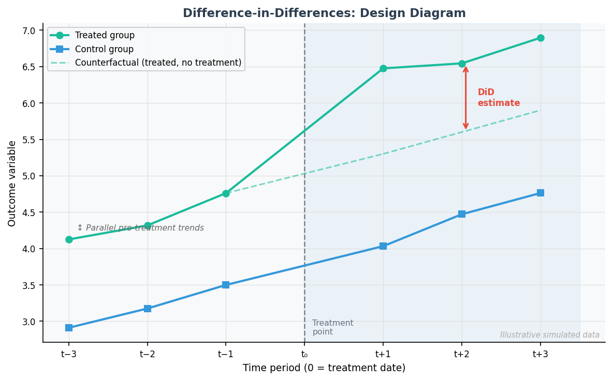
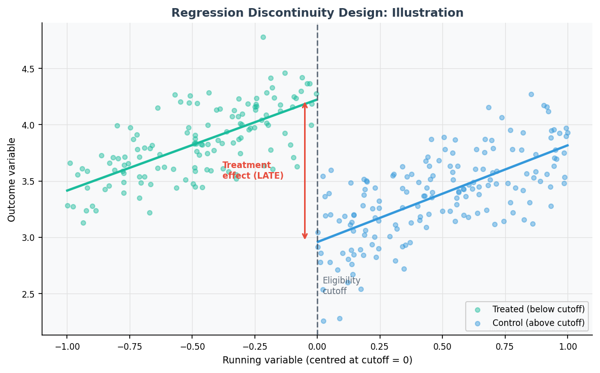

Domain
Quantitative Policy Analysis
Methods
RDD, DiD, PSM, robustness
Tools
Stata, R, Python
Type
Research-based case study
Analyses
2 completed (LSE, 2024)
Graded
Distinction (83%) + MSc thesis
Role relevance
Demonstrates careful statistical reasoning for policy questions, including identification strategy, assumptions, robustness checks, uncertainty communication, and limitations of observational data.
Summary: This page documents my research-based experience with causal policy analysis — two completed, peer-assessed analyses using quasi-experimental methods on real observational datasets. The focus is on the workflow: defining an estimand, choosing an identification strategy, evaluating assumptions, implementing robustness checks, and communicating what can — and cannot — be concluded from data.
Overview
Policy questions — whether a cash transfer programme increases political support, whether a lockdown damages wellbeing — cannot be answered by simply comparing outcomes between groups that chose differently. Treated and untreated groups typically differ in many ways that also affect the outcome. Quasi-experimental methods provide principled ways to isolate causal effects from this confounding, by exploiting naturally occurring sources of variation that approximate random assignment.
This project page summarises two complete analyses conducted during my MSc at the London School of Economics, each addressing a different policy question with a different empirical design. The analyses are documented in detail on separate pages; this page explains the methods, assumptions, workflow, and what the work demonstrates as a data science competency.
The Empirical Challenge
Simple correlations between a policy and an outcome are typically not causal. The groups that receive treatment differ from those that do not — in income, geography, prior behaviour, or dozens of other characteristics that also influence the outcome. This is the fundamental problem of causal inference: in observational data, we never observe the same unit with and without treatment simultaneously.
Quasi-experimental designs address this by finding situations where treatment assignment is as-good-as-random for a well-defined subset of the data. A sharp eligibility cutoff produces near-random variation near the threshold. A policy change that affects one region but not an otherwise-similar one can reveal causal effects if pre-treatment trends were parallel. The skill lies in recognising these structures in the data, formalising the assumptions they require, and testing those assumptions before interpreting results.
Methods
Difference-in-Differences
DiD & Event-Study
Compares the change in outcomes for a treated group before and after a policy event, relative to a control group that was not exposed. The key assumption is that the two groups would have followed parallel trends in the absence of treatment.
- Key assumption: parallel pre-treatment trends
- Tested with: event-study plots, pre-trend tests
- Outputs: ATT estimate with 95% CI, heterogeneity analysis
- Applied in: Victoria COVID-19 lockdown / HILDA panel
Regression Discontinuity
Sharp RDD
Exploits a sharp eligibility threshold in a running variable. Units just below and just above the cutoff are nearly identical in all respects except treatment assignment — yielding a Local Average Treatment Effect (LATE) at the cutoff.
- Key assumption: continuity of potential outcomes at the cutoff
- Tested with: McCrary density test, covariate placebo regressions
- Outputs: LATE with SE, bandwidth sensitivity plots
- Applied in: Uruguay PANES / political support
Robustness & Sensitivity
Validation Checks
Results are only credible if they hold up to alternative specifications. Every analysis includes systematic robustness checks designed to challenge the main finding rather than confirm it.
- Donut-hole regressions (RDD)
- Bandwidth sensitivity analysis
- Placebo tests on pre-treatment covariates
- Linear vs. polynomial functional form comparison
- Local polynomial (rdrobust) vs. OLS comparison
Heterogeneity & Distribution
Subgroup & Distributional Analysis
Average treatment effects can mask important heterogeneity. In the WELLBY dissertation, the distributional impact was the central question: does the harm fall on those already worst-off? A Prioritarian Social Welfare Function was used to formally evaluate this.
- Subgroup analysis by wellbeing quantile
- Propensity Score Matching for covariate balance
- Atkinson SWF (inequality-aversion parameter γ = 1)
- WELLBY accounting (life satisfaction welfare measure)
Design Illustrations
The figures below illustrate the two designs with synthetic simulated data. They show the structural logic of each approach — not results from any specific analysis.

Fig. 1 — Difference-in-Differences. Pre-treatment parallel trends (left of t₀) validate the identifying assumption; the gap between the treated group and the counterfactual (dashed) after treatment is the DiD estimate. Illustrative simulated data.

Fig. 2 — Regression Discontinuity Design. Observations just left and right of the cutoff are nearly identical; the discontinuity in the fitted line at the threshold identifies the Local Average Treatment Effect (LATE). Illustrative simulated data.
Completed Analyses
Regression Discontinuity Design
The Effect of Cash Transfers on Political Support
Policy question: Does receiving a government cash transfer causally increase support for the incumbent government? And does this effect persist after the programme ends?
Context: Uruguay's PANES programme (2005–2007) distributed cash and food-card transfers to households below a predicted income score threshold. Manacorda, Miguel & Vigorito (2011) identified the causal effect using the sharp eligibility cutoff as an instrument. This analysis replicates and extends their methodology with a full robustness battery.
Identification: Sharp RDD at the income score cutoff. Households just below and just above the threshold are comparable on all pre-treatment characteristics, except treatment assignment. This was confirmed by a McCrary density test (p = 0.41, no manipulation) and placebo regressions on seven baseline covariates (six of seven non-significant).
Core finding: ~10% causal increase in political support — robust across OLS, donut-hole, bandwidth sensitivity, and local polynomial specifications
Sharp RDD
McCrary test
Donut-hole
rdrobust
Stata
Distinction (83%)
Difference-in-Differences + PSM
Distribution-Sensitive Policy Analysis: COVID-19 Lockdowns and Life Satisfaction
Policy question: What was the causal impact of Victoria's second COVID-19 lockdown (July–October 2020) on life satisfaction, and did the harm fall disproportionately on those already worst-off?
Context: Victoria imposed one of the most stringent lockdowns outside China, while other Australian states remained open. The HILDA panel (215,733 observations, 16,513 individuals, 20 waves) allows comparison of Victorians and non-Victorians before and after the lockdown — the structure a DiD design requires.
Identification: Difference-in-Differences with Propensity Score Matching pre-processing (to improve covariate balance between treated Victorians and control states). The parallel-trends assumption was tested using pre-treatment waves. Results were fed into an Atkinson Social Welfare Function (γ = 1) to formally evaluate the distributional consequences.
Core finding: −0.030 points life satisfaction (95% CI −0.049 to −0.012) — harm concentrated among worst-off (LS < 4: additional −0.334 points)
Difference-in-Differences
Propensity Score Matching
Panel data
HILDA (215K obs)
Stata
MSc Dissertation
Technical Workflow
The typical pipeline for a quasi-experimental analysis, from raw data to written findings:
1
Data cleaning & variable construction
Harmonise raw survey data; construct treatment indicator, running variable, outcome variable, and control variables. Validate sample composition against the research question.
2
Treatment / control definition & exploratory diagnostics
Plot the distribution of the running variable (RDD) or the raw group trends over time (DiD). Visual inspection often reveals whether the design is viable before any regression is run.
3
Assumption tests
Formally test the identifying assumptions: McCrary density test and covariate placebo regressions (RDD); parallel-trends pre-test and covariate balance check (DiD/PSM). Document what is found, not just what supports the design.
4
Main estimation
Estimate the preferred specification: OLS with robust standard errors (RDD), or two-way fixed-effects regression (DiD). Report the point estimate, standard error, and confidence interval alongside sample size.
5
Robustness checks
Systematically vary the specification: bandwidth, functional form, exclusion zones (donut), control variables. A credible result holds across all meaningful alternatives. Any instability is reported transparently.
6
Visualisation & communication
Produce RD plots, event-study plots, bandwidth sensitivity charts, and coefficient plots with confidence intervals. Figures are generated programmatically (Stata, R, or Python) — no manual editing. Write findings for both technical and non-technical readers.
What this demonstrates
- Causal reasoning beyond prediction — choosing the right estimand and identification strategy, not just fitting a model
- Statistical modelling of policy interventions — RDD, DiD, PSM, and local polynomial regression, implemented on real survey data
- Careful interpretation of observational data — knowing what can be claimed (LATE at the cutoff, ATT for the treated) and what cannot
- Robustness and sensitivity thinking — treating robustness checks as a challenge to the main finding, not a box-ticking exercise
- Clear communication of uncertainty — presenting confidence intervals, p-values, and limitations honestly in both tables and prose
- Bridging technical analysis and policy relevance — translating regression coefficients into policy-relevant quantities and clearly stating what the findings do and do not imply
Assumptions and Limitations
Every quasi-experimental design rests on identifying assumptions that are testable in part but not fully provable. Honest analysis requires stating them explicitly:
RDD assumptions
- Continuity of potential outcomes at the cutoff — tested with McCrary, covariate placebos
- No precise manipulation of the running variable — inspected via histograms; McCrary p = 0.41
- LATE is local: findings apply only near the poverty threshold, not to the full population
DiD assumptions
- Parallel trends — tested using pre-treatment waves of HILDA
- No differential anticipation — lockdown was announced with limited advance notice
- SUTVA — spillovers between states are possible; treated as negligible given state border closures
- This page is a methodological case study. Underlying datasets (HILDA, PANES) require data access agreements and are not independently redistributable here.
- Causal claims depend on design assumptions that are partially but not fully verifiable.
- The purpose is to document workflow and reasoning — not to claim universally applicable policy effects.
Reproducibility note
The two illustrative design figures on this page are fully reproducible from projects/causal-policy-analysis/scripts/generate_illustrative_figures.py using synthetic data. The underlying Stata analysis scripts exist for both completed analyses; public replication files will be added where the licensing of the source datasets permits. Where data cannot be shared, this page documents the analytical design, assumptions, workflow, and outputs in sufficient detail to evaluate the methodology.
Related Work
Cash Transfers & Political Support — Full RDD Analysis
Complete pipeline: McCrary test, placebo regressions, OLS main results (Tables 1–3), donut-hole robustness (Tables 4–5), local polynomial regression (Tables 6–7), bandwidth sensitivity plots. Stata. Grade: 83% Distinction, LSE.
Distribution-Sensitive Policy Analysis (WELLBYs) — MSc Dissertation
DiD + PSM on HILDA panel (215K observations). First causal estimate of a COVID-19 lockdown's impact on life satisfaction. Atkinson SWF for distributional welfare comparison. Stata. LSE Behavioural Science.
Endogeneity in Semiparametric Distribution Regression — MSc Thesis (Cologne)
Statistical theory: a test for the practical relevance of endogeneity using L²-distance between naïve and IV distribution regression estimators. Asymptotically pivotal test statistic. Applied to Card (1995) returns-to-education data. R.